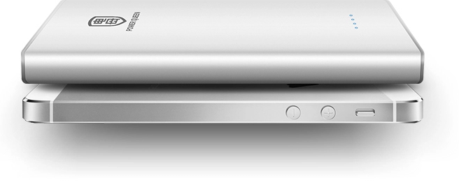

深圳市品迪科技有限公司是一家专业从事研发、生产和销售移动电源以及主要针对iPhone、iPad、PSP、MP3/MP4等多种数码设备的万能便携电源的高新技术企业。我们立志通过对产品及服务的不断革新，成为移动电源民族品牌的领导者。
品迪科技前身专业从事模具开发五金制造领域13年，拥有国内 最优秀的团队国内大型电芯及电池厂家均是我们的合作伙伴。我 多项产品也逐一通过了CERoHS，FCC等认证。同时，品迪的所有产品在全球范围实行了“三包”，可靠的售后服 务确保了客户的利益。
品迪的产品型号也很多，在品迪官网上可以看到7款不同型号的产品，品迪的产品型号从电池容量2600mAh到11000mAh，输出电压电流有5V 4500mA、5V 1A的，品迪主要是针对手机、数码相机、psp，还有ipad这类充电电压为5V的设备，不同的电流可以满足不同型号的设备的需要。最畅销的型号分别是： PD2S-01、PD4S-01 、PD5S-01、 PD5S-02、 PD6S-01、PD10S-01、 PD11S-01七款产品
